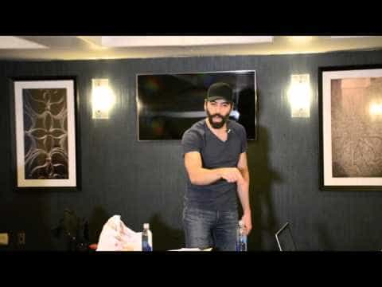

< < < Back
Why Fragility And Inaction Could Be The Death Of Free Speech – Return Of Kings
You are not free to say what you think without risks. You cannot expose a truth that does not suit those who are in control, without paying a price. You will be under fire for stating what is true but dangerous for the established order.
Hoping that you will forever dodge the attacks is unrealistic. Your position is not safe and you must come to terms with this. In due course, they will eventually hit you.

Like the falling man said : “So far, so good”.
For the right to be free, there is no such thing as mercy
In this war for free speech, rest assured that the victor will not be magnanimous towards the loser. The focus, in addition to seeking truth and exposing lies, should be on how to take hits and survive it. Resilience is the aim. Today, liberal governments can try to publicly disgrace you, make you lose your job or imprison you. Tomorrow, through inaction and letting them progress in their hegemony, death could be your sentence for saying out loud what you think.
Every man has something to lose. The less vulnerability you expose to the enemy, the less likely he is to defeat you.
Resilience versus fragility
The reinforcement of the body and the mind by being exposed to conflict gradually, makes us progress through trial and error. There is a total absence of exposure to actual harm among the large majority of SJWs. “Fragile” is what defines our foes and will be their downfall. It is the weak one that asks for equality from the strong. Like cackling schoolgirls, the ones who criticize or mock do very little when facing an opponent that is impervious to their words.

Carl the Cuck. What can this pencil neck do without a crowd? Beware as the likes of him could be in a position of power in the future, provided that they are not culled by the very people they try to defend first
By celebrating strength and seeking resilience instead of weakness, we arm ourselves and the ones that will follow us for the dark times ahead.
The fragile, when cornered and exposed to violence, prays and hopes for the best. When he rarely reacts, he quickly learns that life is not an Internet argument.
Inaction is as dangerous as the threat itself

In a textbook display of fragility, after being openly attacked by Islam, the left’s reaction in Belgium, France or Orlando is the same. People hold hands, light candles and stay idle, hoping things will change by themselves. Whoring publicly for attention is easy. It is a different thing to actually fight what threatens you.
The choice of inaction can be motivated by two things:
- Fear of being hurt or shamed for someone else’s sake
- Indifference for the problem at hand
Showing weakness inspires disgust and hatred. This is how things are. Mercy is a recent Christian value that goes against our instinct of wiping the weak from the face of the Earth. Men universally respect the warrior that fights bravely. Cowardice makes the last thoughts of respect vanish.

The weak crumbles under pressure. The resilient stands tall in the storm
Calm is always temporary

When attacked by something they defend, the liberal pretends to be shocked. The delusion is abysmal. The monster the leftist allows to grow will always attack him in return. While curled in a ball on the floor and losing his blood, he says “At least I am tolerant and I have the moral high ground.”
The war for free speech is as simple as any other. The first one to cave in will lose. The enemies will keep hitting. This is why we have to bring back the notion of standing our ground.
On how to be resilient
Among the numerous things that can be done, here are a few that immediately cross the mind:
- Give an honest look at what your weaknesses are and work on them daily
- Protect your family and friends
- Create a very strict circle of trust.
- Work towards being financially untouchable
- Strengthen your body by learning how to defend yourself, regular exercise, meditation and a good hygiene of life
- Arm yourself as your raw physical strength is finite
- Toughen your mind through reading, writing, developing a state of constant “relaxed but alert” state of awareness
- Striving for a maximum and balanced level of strength in mind and body
- Expose the lies of your foes for the world to know
- Be visible. ACT
The list is longer and it is a lifetime commitment. Take a good, hard look at your actions when you are striving towards what you believe is just. Is what I do genuinely effective? Am I looking for recognition more than a positive outcome? Does it have an actual impact on the world around me?
In his recent article, The Resistance Pyramid, Roosh details how you must firstly be an example of what you preach, acting locally before influencing your surroundings.
As a body can be broken, it is paramount for the mind to be strong, to survive trauma and overcome. I will insist, once again, on physical confrontation being vital. You know after being repeatedly punched and kicked that words, if they do not carry truth, are just a sound wave.
Pour finir
Become the “captain of your soul.” When your own world is under control, bring guidance to others when they seek it. You cannot convince those who shut their minds, no matter the proof you bring them.
When you witness someone drowning, you want to help. But there is no point helping someone that consciously does not want to be saved. Let him drown. Your life is more important.
—
Roosh’s new book, Free Speech Isn’t Free, has just been released, and comes with three bonuses if you order before June 20. It gives an inside look to how the globalist establishment is attempting to marginalize masculine men with an agenda that promotes censorship and sterility. It also shares key knowledge and tools that you can use to defend yourself against leftist attacks. Click here to learn more about the book. Your support helps fund our operation.